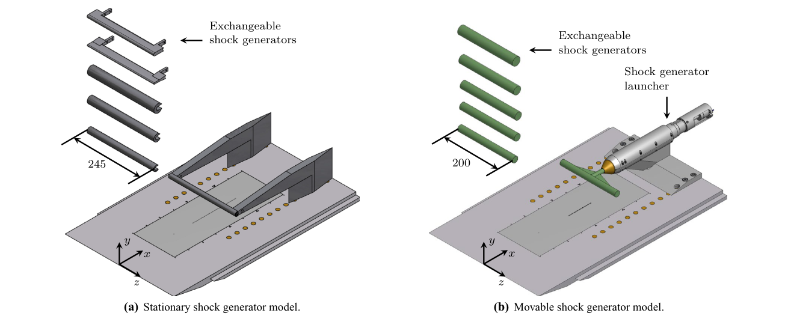
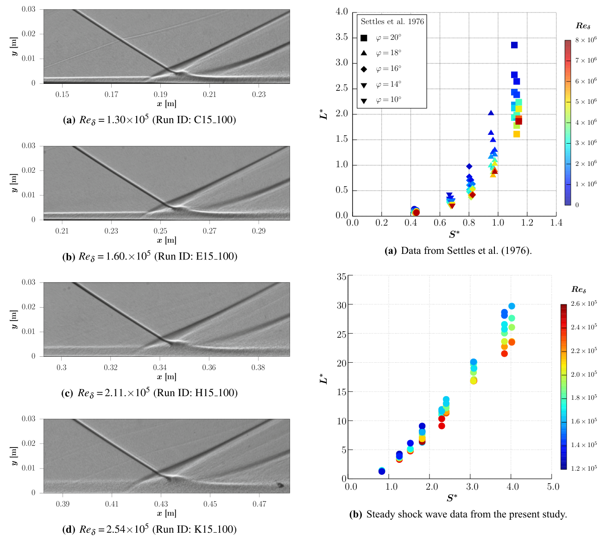
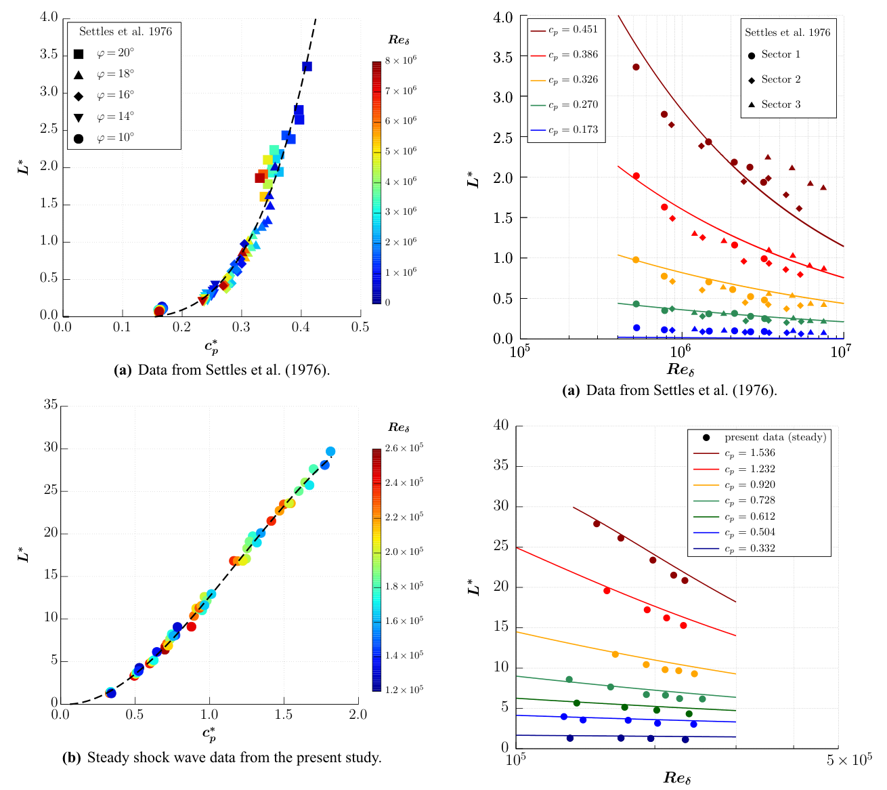
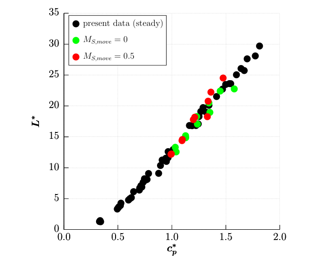

01中文摘要
激波/边界层干扰在跨声速、超声速和高超声速应用中十分重要；定常干扰已研究60余年，但典型构型上的行进激波非定常干扰研究很少。实验分析均匀运动入射激波对分离SWBLI的影响，来流马赫数3，激波上游行进马赫数0.5。为评价该效应，先广泛研究定常参考干扰；改进了文献中的标度方法，引入新的雷诺数影响处理，大幅降低数据散布。按真实激波马赫数3.5计，行进干扰结果落在参考数据散布范围内，并讨论了修正标度对定常和行进干扰的适用性。
原始摘要（英文/原文）
Shock-wave/boundary-layer interactions (SW–BLIs) play an important role in a wide range of transonic, supersonic and hypersonic applications. Fundamental studies on stationary interactions have been conducted extensively during the last 60 years. However, unsteady SWBLIs with traveling shock fronts have been little studied on canonical geometries. In the present experimental investigation, the influence of a uniformly moving impinging shock on the separated SWBLI flow is analyzed, with a freestream Mach number of 3 and a traveling Mach number in upstream direction of 0.5. To evaluate this effect, stationary reference SWBLIs have been investigated in a wide ranging study. A scaling method from the literature has been enhanced to drastically reduce the data scattering using a new approach accounting for the Reynolds number influence. The results gathered from the traveling interactions were within the spread of reference data, considering the true shock-wave Mach number of 3.5. The validity of the modified scaling approach to describe the interaction length in cases with steady and traveling shock-wave/turbulent-boundary-layer interactions is discussed.
02阅读说明
类型：期刊论文（Experiments in Fluids, 2020, 61:156，19页），实验研究。材料含19页全文、图件清单与16幅抓取图；PDF文本层完整，表1–4给出边界层、稳态与移动工况的逐项数据。信息完整度高：风洞、模型、诊断、不确定度、53个稳态工况与移动工况均交代；局限是仅一个来流马赫数、一个移动速度，标度为经验拟合而非理论推导。 文章类型：期刊
03一句话核心与三句话摘要
在M∞=3.04下用移动激波发生器（Mtrav≈0.5）实验，提出以Reδ连续修正的cp*标度，使稳态与移动SWBLI的L*坍缩；移动激波需采用真实Ms≈3.5。
- 稳态SWBLI已有多种相互作用长度标度，但旅行激波前沿诱导分离的规范构型实验很少，进气道不起动等非定常问题缺少可用的时间尺度与标度。 AI概括
- 在DLR Göttingen的Ludwieg管DNW-RWG中，以M∞=3.04±0.04、Re1=46±1×10⁶ m⁻¹对平板/圆柱激波发生器产生的53个稳态SWBLI和Mtrav≈0.5的移动SWBLI开展纹影、Pitot与Kulite测量。 原文明确
- 作者用连续函数K(Reδ,cp)替代Souverein标度中的阶跃k，得到cp*与L*的坍缩关系；移动激波数据仅在采用真实激波马赫数Ms≈3.5时落入稳态数据散布带。 AI概括
04核心内容清单
| 要点 | 类型 | 重要性 | 原文依据 | 属性 |
|---|---|---|---|---|
| 建立可同时研究稳态与匀速移动入射激波的实验装置：固定圆柱与可发射CFC圆柱激波发生器共用同一平板。 | 实验装置 | A | p3–4，2.2节，图2 | 原文明确 |
| 平板边界层为充分发展湍流：Reδ=1.01~2.34×10⁵、δ*=0.72~1.79 mm、cf=0.00178~0.00141。 | 边界层测量 | A | p7–8，4.1节，表1 | 原文明确 |
| 分离线呈弧形、反向流带展向分量，流动严格说并非二维。 | 流动显示 | A | p8，4.2节，图8 | 原文明确 |
| ξimp由2.36增至3.76，L由19.2 mm增至48.0 mm。 | 纹影定量 | A | p8，4.2节，图9 | 原文明确 |
| 固定ξimp=2.57、Reδ由1.30增至2.54×10⁵，L由22.0 mm增至31.9 mm。 | 纹影定量 | A | p8，4.2节，图10 | 原文明确 |
| 原始Souverein标度下数据按Reδ分层，两段阶跃k不足以描述雷诺数影响。 | 标度检验 | A | p9–11，4.3节，图11 | 原文明确 |
| 以cp*=K(Reδ,cp)cp替代S*=k cp，取a=−0.27、b=1.41、Reref=2×10⁵，显著降低数据散布。 | 标度方法 | A | p11，4.3节，式(3)–(6)，图12 | 原文明确 |
| 修正后入射激波数据与压缩斜坡数据仍分成两条趋势，说明构型/三维性等二阶因素仍存在。 | 数据比较 | B | p12–13，4.3节，表2、图14 | 原文明确 |
| 相同ξimp下移动SWBLI的L均小于稳态；作者归因于边界层变薄与更高Ms的压缩性效应。 | 实验结果与解释 | A | p13，4.4节，表4、图15 | 原文明确 |
| 采用真实Ms≈3.5后，移动数据落入稳态散布带；式8对移动数据R²=0.93、ΔL*=1.8。 | 标度验证 | A | p13–15，4.4节，图16 | 原文明确 |
| 在约15%U∞的移动速度范围内，稳态标度可预测移动SWBLI的L*。 | 作者结论 | B | p15，第5节结论5 | 原文明确 |
| 标度为经验拟合，仅一个M∞与一个Mtrav，且二维标度用于严格三维分离，外推能力有限。 | 材料局限 | C | 全文，p8、p15 | AI概括 |
05引言：研究问题与领域缺口
第1节（p1–3）指出，SWBLI研究已持续60余年，但带旅行激波前沿的非定常SWBLI在规范构型上研究很少；这类流动出现在激波管、冲压发动机进气道起动等过程中，需确定流动适应新条件的时间尺度，并改进对进气道不起动的建模。稳态研究通常采用二维压缩拐角或平板反射斜激波；相互作用长度L与上游影响点x1是压力/热流空间标度的基础（Chapman等、Dupont等）。作者回顾Souverein等（2013）的L标度：考虑马赫数、激波强度与边界层位移厚度δ*。非定常性方面，作者区分高频小尺度（来流边界层）与低1~2个量级的低频大尺度运动；分离流脉动伴随激波脚在间歇区移动，典型St≈0.02±0.01，对应特征分离激波速度Us≈0.02~0.04U∞（Clemens & Narayanaswamy 2014）。外部强迫研究分两类：单次或循环斜坡角运动（Roberts 1989；Park等1994、2001；Coon & Chapman 1995），以及旋转/俯仰激波发生器（Bruce & Babinsky 2008；Liu & Zhang 2011；Pasquariello等2015）。作者指出这些研究往往同时改变激波强度与入射位置，未隔离“均匀移动”的影响；本文目标是产生恒定强度、匀速上游移动的入射激波，分离其对L的影响，并用稳态参考数据验证和发展标度。为区分强迫移动与固有激波振荡，移动速度需高于自激特征速度（p3）。
06流动条件与几何构型
| 项目 | 数值/描述 | 依据 | 备注 |
|---|---|---|---|
| 风洞 | DLR Göttingen Ludwieg管DNW-RWG，未加热A管 | p3，2.1节 | |
| 风洞能力 | 2≤M∞≤7，2×10⁶≤Re1≤1.1×10⁸ m⁻¹；两根80 m储气管；运行300~350 ms | p3，2.1节 | |
| 试验段截面 | 0.5×0.5 m² | p3，2.1节 | |
| 来流马赫数 M∞ | 3.04±0.04 | p3，2.1节 | |
| 单位雷诺数 Re1 | 46±1×10⁶ m⁻¹ | p3，2.1节 | |
| 总压 p0 | 0.5 MPa | p3，2.1节 | |
| 总温 T0 | 255 K | p3，2.1节 | |
| 平板尺寸 | 长669 mm、宽400 mm | p3，2.2节，图1 | |
| 平板前缘 | 尖锐前缘，半径约10 μm | p3，2.2节 | |
| 转捩位置 | 转捩结束约x=100 mm | p3–4，2.2节 | |
| 边界层测站 | x=153、213、273、333、393 mm（间隔60 mm） | p5，2.3、2.4节，表1 | |
| 边界层参数范围 | δ=2.18~5.07 mm，δ*=0.72~1.79 mm，θ=0.14~0.33 mm，Reδ=1.01~2.34×10⁵，cf=0.00178~0.00141 | p7–8，表1 | |
| 稳态激波发生器直径 | d=5、10、15、20、25、30 mm（步长5 mm） | p4，2.2节 | |
| 稳态激波发生器宽度 | 245 mm | p4，2.2节 | |
| 稳态发生器流向位置 | Δx=39 mm（Pos. A）至339 mm（Pos. K），步长30 mm | p4，2.2节 | |
| 稳态发生器法向距离 | Δy=80 mm或100 mm | p4，2.2节 | |
| 稳态名义激波强度 | ξimp=1.82~3.84 | p5，2.4节 | |
| 稳态 Δy/d | 由16降到3.2 | p5，2.4节 | |
| 稳态工况数 | 53个 | p5，2.4节，表3 | |
| 移动激波发生器直径 | d=18、20、22、24、26、28 mm（步长2 mm） | p4，2.2节 | |
| 移动激波发生器材料/宽度 | 碳纤维复合材料（CFC），宽200 mm | p4，2.2节 | |
| 移动发生器法向距离 | Δy=80 mm | p4，2.2节 | |
| 移动马赫数 Mtrav | ≈0.5（向上游） | p5、p13，2.4、4.4节 | |
| 移动速度平台 | 约15%U∞，持续约0.5 ms，覆盖Δx≈45 mm | p7，3.2节，图6 | |
| 加速/减速功率 | 约520 kW/730 kW | p7，3.2节 | |
| 移动工况评估位置 | ximp,move=336±11 mm | p5，2.4节 | |
| 移动工况激波强度 | ξimp=3.47~4.40 | p5，2.4节 | |
| 移动工况真实激波马赫数 | Ms≈3.5 | p5、p13，2.4、4.4节 | |
| 稳态纹影 | pco.dimax HS4，1 kHz，2000×2000像素；闪光18 ns或连续光10 μs | p4，2.3节 | |
| 移动纹影 | Phantom v1210，19 kHz，1280×512像素，约5 px/mm；CAVILUX Smart 20 ns、640 nm | p4，2.3节 | |
| Pitot耙 | 行程0~9 mm，定位1 μm，移动速度0.053 m/s，采样5 kHz | p4，2.3节 | |
| 压力传感器 | Kulite XCQ-062-1BAR-A与XT-190M-15A | p4–5，2.3节 | |
| 数据约化假设 | Rayleigh–Pitot；湍流恢复因子r=0.89；常壁温Tw；Crocco–Busemann；cf用Van Driest变换 | p5，2.3节 | |
| 图像平均 | 稳态每工况20张短曝光图，对应20 ms；移动工况逐张处理不平均 | p5，3.1节 | |
| 测量不确定度 | ximp与x1各±0.75 mm，L±1.5 mm，βimp±0.1° | p6，3.1节 |
07核心现象与关键参数
| 参数 | 定义 | 数值 | 关系/说明 | 依据 |
|---|---|---|---|---|
| 相互作用长度 L | 上游影响点x1到入射激波与壁面交点ximp的距离 | 稳态19.2~48.0 mm；表4移动18工况31.6 mm等 | L=ximp−x1 | p5–6，3.1节，图3 |
| 无量纲相互作用长度 L* | L用δ*、激波角β与偏转角φ归一化 | 1.28~29.70 | L*=L sinβ sinφ/[δ* sin(β−φ)] | p9，4.3节，式(2) |
| 名义激波强度 ξimp | 无平板时虚拟入射点的无黏压力比 | 稳态1.82~3.84；移动3.47~4.40 | p5，2.4节 | |
| 压力系数 cp | 入射激波下游反射后的压力系数，按斜激波理论由M与边界层边缘偏转角φ计算 | 表3约0.332~1.608；表4约0.99~1.77 | p9–11，4.3节，式(1) | |
| 无量纲相互作用强度 S* | S*=k cp，k为阶跃因子 | 0.83~4.02 | p9–10，4.3节，式(1) | |
| 阶跃因子 k | 使S*在初始分离时约为1的常数 | Reθ≤10⁴时k=3；Reθ>10⁴时k=2.5 | p9，4.3节 | |
| 连续相关函数 K | 描述Reδ与cp联合影响的幂律函数 | K=(Reδ/Reref)^{a×cp^b}，Reref=2×10⁵，a=−0.27，b=1.41 | p11，4.3节，式(3)、(6) | |
| 归一化压力系数 cp* | cp*=K(Reδ,cp) cp，替代S* | 0.13~1.82 | L*=f(cp*) | p11，4.3节，式(4)–(6) |
| 参考雷诺数 Reref | K中的参考雷诺数，取充分发展湍流范围 | 2×10⁵ | p11，4.3节 | |
| 拟合参数 a、b | K的指数拟合参数，由最小二乘确定 | a=−0.27，b=1.41 | p11，4.3节，式(6) | |
| 稳态最佳拟合式 | L*关于cp*的三次多项式 | L*=−1.14cp*+19.16cp*²−5.36cp*³；R²=0.99 | p11–12，式(8)，图12 | |
| Settles数据最佳拟合式 | L*关于cp*的四次多项式 | L*=−3.4cp*²+142.33cp*⁴ | p11，式(7)，图12 | |
| 移动激波马赫数 Ms | 相对实验室系的真实激波马赫数 | M∞+Mtrav≈3.5 | 用于计算移动工况的cp与βimp | p13，4.4节 |
| 移动马赫数 Mtrav | 激波发生器/入射激波相对来流的上游移动马赫数 | ≈0.5 | p5，2.4节 | |
| 拟合优度 R² | 最佳拟合式对实验数据的决定系数 | 稳态0.99；移动0.93 | p14，4.4节 | |
| 最大偏差 ΔL* | 拟合式与实验L*的最大偏差 | 稳态0.8；移动1.8 | p14，4.4节 | |
| 重复性 ΔL* | 同一发生器两次实验的L*差异 | d=18、20、22 mm时<1.25；d=24 mm时2.5 | p14，4.4节 | |
| 边界层位移厚度 δ* | 由Pitot剖面得到的位移厚度，用于L*与Reδ | 0.72~1.79 mm（稳态测站） | p7–8，表1 |
08方法与数据
第2节（p3–6）给出实验装置与测试矩阵。风洞为DLR Göttingen的Ludwieg管DNW-RWG，覆盖2≤M∞≤7、2×10⁶≤Re1≤1.1×10⁸ m⁻¹；两根80 m长储气管，运行时间约300~350 ms；本实验用未加热的A管，试验段0.5×0.5 m²。来流M∞=3.04±0.04，Re1=46±1×10⁶ m⁻¹，p0=0.5 MPa，T0=255 K（p3）。平板长669 mm、宽400 mm，前缘半径约10 μm，转捩结束位置约x=100 mm（p3–4，图1）。稳态实验用6个圆柱激波发生器，直径d=5~30 mm、步长5 mm，宽度245 mm；圆柱轴到平板前缘的流向位置Δx可从39 mm（Pos. A）调到339 mm（Pos. K），步长30 mm；轴高于平板Δy取80 mm或100 mm，以改变激波强度；名义激波强度ξimp定义为无平板时虚拟入射点的无黏压力比，范围1.82~3.84，Δy/d由16降到3.2；共53个工况（p4–5，表3、图2a）。移动实验用6个碳纤维复合材料（CFC）圆柱，d=18~28 mm、步长2 mm，宽度200 mm，Δy=80 mm；以Mtrav≈0.5向上游移动，速度平台约15%U∞、持续约0.5 ms、覆盖Δx≈45 mm；加速功率约520 kW、减速功率约730 kW；评估位置ximp,move=336±11 mm，ξimp=3.47~4.40，真实激波马赫数Ms≈3.5（p5、p7，表4、图2b）。诊断包括：稳态纹影用pco.dimax HS4，1 kHz、2000×2000像素，闪光灯半宽18 ns或连续光源曝光10 μs；移动纹影用Phantom v1210，19 kHz、1280×512像素、约5 px/mm，CAVILUX Smart脉冲二极管激光（20 ns、640 nm）（p4）。边界层用快速移动微型Pitot耙测量，垂直行程0~9 mm、定位精度1 μm、移动速度0.053 m/s、采样5 kHz；压力信号用Kulite XCQ-062-1BAR-A与XT-190M-15A（p4–5）。数据约化：Pitot压力与壁压迭代求Mach数剖面（Rayleigh–Pitot）；取湍流恢复因子r=0.89、常壁温Tw，用Crocco–Busemann方程迭代求速度与温度剖面；cf按Schülein等（1996）的Van Driest变换与Huang等（1993）方法由速度剖面计算；边界层剖面在x=153~393 mm、间隔60 mm的5个站测量（p5，表1）。纹影处理：稳态每工况平均20张短曝光图（对应20 ms），用Canny边缘拟合模型边缘校正振动位移；检测入射弓形激波，因其弯曲、不能线性外推到壁面，故用无平板RANS预测的无扰动弓形激波轮廓外推到壁面得ximp；分离激波用Canny检测，因边界层内无法检测，按Elfstrom（1972）方法外推；边界层内最上游压缩波用实测Mach数剖面弯向声速线，与壁面交点定义为x1；L=ximp−x1。不确定度约为ximp与x1各±0.75 mm、L±1.5 mm、βimp±0.1°（p5–6，图3）。
| 项目 | 内容 | 依据 | 备注 |
|---|---|---|---|
| 研究类型 | 风洞实验：稳态参考SWBLI+匀速移动入射激波SWBLI | p1、p3–5 | |
| 风洞 | DLR Göttingen Ludwieg管DNW-RWG，未加热A管，试验段0.5×0.5 m²，运行300~350 ms | p3，2.1节 | |
| 来流条件 | M∞=3.04±0.04，Re1=46±1×10⁶ m⁻¹，p0=0.5 MPa，T0=255 K | p3，2.1节 | |
| 模型 | 平板669×400 mm，前缘半径约10 μm；可更换板插入件 | p3–4，2.2节，图1 | |
| 稳态激波发生器 | 6个圆柱，d=5~30 mm，宽245 mm，Δx=39~339 mm，Δy=80/100 mm | p4，2.2节，图2a | |
| 移动激波发生器 | 6个CFC圆柱，d=18~28 mm，宽200 mm，Δy=80 mm，由发射器向上游发射 | p4，2.2节，图2b | |
| 稳态工况矩阵 | 53个工况，ξimp=1.82~3.84，Δy/d=16~3.2 | p5，2.4节，表3 | |
| 移动工况矩阵 | Mtrav≈0.5，ξimp=3.47~4.40，Ms≈3.5，ximp,move=336±11 mm | p5，2.4节，表4 | |
| 稳态纹影 | pco.dimax HS4，1 kHz，2000×2000像素；闪光18 ns或连续光10 μs；20张平均 | p4–5，2.3、3.1节 | |
| 移动纹影 | Phantom v1210，19 kHz，1280×512像素，约5 px/mm；CAVILUX Smart 20 ns、640 nm；逐张处理 | p4–5，2.3、3.1节 | |
| 边界层测量 | 快速移动微型Pitot耙，0~9 mm，定位1 μm，0.053 m/s，5 kHz；x=153~393 mm五个站 | p4–5，2.3节 | |
| 压力测量 | Kulite XCQ-062-1BAR-A与XT-190M-15A | p4–5，2.3节 | |
| Mach数剖面 | Pitot压力与壁压按Rayleigh–Pitot方程迭代 | p5，2.3节 | |
| 速度/温度剖面 | r=0.89、常壁温，Crocco–Busemann迭代 | p5，2.3节 | |
| 壁面摩擦系数 | Schülein等（1996）方法：Van Driest变换+Huang等（1993） | p5，2.3节 | |
| 纹影图像配准 | Canny边缘检测拟合模型边缘，校正帧间振动位移；稳态平均20张 | p5，3.1节，图3 | |
| 入射激波位置 ximp | 检测弓形激波前缘；因弯曲不能线性外推，用无平板RANS预测的无扰动轮廓外推到壁面 | p5，3.1节，图3 | |
| 分离激波与 x1 | Canny检测分离激波，按Elfstrom（1972）外推；最上游压缩波用实测Mach剖面弯向声速线，与壁面交点即x1 | p5–6，3.1节，图3 | |
| 相互作用长度 | L=ximp−x1 | p6，3.1节 | |
| 不确定度 | ximp与x1各±0.75 mm，L±1.5 mm，βimp±0.1° | p6，3.1节 | |
| 标度拟合 | Souverein原始S*、L*；以K=(Reδ/Reref)^{a cp^b}构造cp*；最小二乘联合拟合Settles与本文数据；多项式拟合L*(cp*) | p9–12，4.3节，式(1)–(8) | |
| 移动工况处理 | 用真实Ms≈3.5计算cp与βimp，再代入式6与式8；与稳态参考数据比较 | p13–15，4.4节，图16 |
09核心推导与公式
把Souverein等（2013）的相互作用长度标度作为基线：用压力系数cp表示激波强度，用δ*与激波几何角归一化L；发现原始方法用两段阶跃k描述雷诺数影响会在宽Reδ范围产生分层，于是把Reδ与cp的联合影响写成连续幂律函数K，定义cp*=K cp，使L*=f(cp*)成为单一曲线；最后用该曲线检验上游移动激波的数据，并用真实Ms=M∞+Mtrav计算移动工况的cp与βimp。
关键假设
- 相互作用长度L可由上游影响点x1与入射激波壁面交点ximp确定，L=ximp−x1。
- 激波强度可用边界层边缘偏转角与来流马赫数按斜激波理论得到的cp表示；对非平面弓形激波，用虚拟入射点处的偏转角计算。
- L可用δ*、激波角β与偏转角φ归一化为L*。
- 雷诺数影响可写成Reδ与cp的幂律乘积K，参考雷诺数取Reref=2×10⁵。
- 移动激波在评估位置的瞬时流动可用准稳态标度描述，真实激波马赫数为Ms=M∞+Mtrav。
推导过程
Souverein等把激波强度写成压力系数cp并乘以阶跃因子k，得到S*；把L用δ*、激波角β与偏转角φ归一化，得到L*。
k仅取两段：Reθ≤10⁴时k=3，Reθ>10⁴时k=2.5。图11显示同一S*下数据按Reδ明显分层，说明阶跃函数不能描述连续的雷诺数影响，需要连续修正。
以Reref=2×10⁵为参考，把Reδ与cp的影响写成幂律乘积K，指数a、b待拟合。
用cp*=K cp替代S*=k cp，得到L*=f(Reδ,cp)=f(cp*)；修正后初始分离不再作为特殊门槛，L*只依赖cp*。
对Settles等（1976）与本文稳态数据联合做最小二乘，得到a=−0.27、b=1.41，Reref=2×10⁵，即式(6)。
Settles等压缩斜坡数据用四次多项式（式7），本文入射激波数据用三次多项式（式8）；本文数据R²=0.99，修正后Reδ分层基本消失。
移动激波的真实激波马赫数为M∞+Mtrav≈3.5；用它计算cp与βimp后代入式(6)与式(8)，移动数据落入稳态数据散布带，R²=0.93、ΔL*=1.8。
适用边界：标度是经验拟合而非从动量/涡量方程推导；式(7)与式(8)不同，说明压缩斜坡与入射激波（以及三维性、壁温、隔板等）仍影响函数形式；cp按斜激波理论计算，非平面弓形激波用虚拟入射点偏转角近似；只验证了一个M∞=3.04与一个Mtrav≈0.5，外推到更高移动速度或其他马赫数需谨慎；L由纹影几何外推得到，ximp/x1不确定度±0.75 mm、L±1.5 mm，对小分离泡相对误差较大；流动严格三维，二维标度只是工程近似。
10结果：主要发现与关键证据
第4节（p7–15）。4.1节平板边界层：Table 1给出x=153~393 mm的δ=2.18~5.07 mm、δ*=0.72~1.79 mm、θ=0.14~0.33 mm、Reδ=1.01~2.34×10⁵、cf=0.00178~0.00141，确认充分发展湍流（p7–8，表1）。4.2节稳态拓扑：油膜干涉显示分离线呈弧形、分离泡内反向流带展向分量，作者据此指出流动严格说并非二维（p8，图8）。纹影定量：ξimp由2.36增至3.76时L由19.2 mm增至48.0 mm（p8，图9）；固定ξimp=2.57、Reδ由1.30增至2.54×10⁵时L由22.0 mm增至31.9 mm（p8，图10）。4.3节标度：按Souverein原始方法（k=3或2.5）缩放后，同一S*下数据明显按Reδ分层（p9–10，图11）；作者改用连续相关函数K=(Reδ/Reref)^{a×cp^b}，取Reref=2×10⁵，以cp*=K cp替代S*=k cp（p11，式3–5）；对Settles等（1976）与本文稳态数据联合最小二乘得a=−0.27、b=1.41（式6）；Settles数据最佳拟合为L*=−3.4cp*²+142.33cp*⁴（式7），本文数据为L*=−1.14cp*+19.16cp*²−5.36cp*³（式8），本文R²=0.99（p11–12，图12）。修正后cp*范围0.13~1.82，S*范围0.83~4.02，L*范围1.28~29.70；本文Reδ=1.27~2.5×10⁵（Reθ=8.1×10³~1.7×10⁴），Settles数据Reδ=5.2×10⁵~7.5×10⁶（Reθ=2.3×10⁴~3.1×10⁵）（p10–11）。图14把本文数据与多机构数据比较：修正后各数据集内部散布显著减小，但入射激波数据与压缩斜坡数据分成两条不同趋势，斜坡组较不均匀，作者推测还有壁温、隔板等未计入参数（p12–13，表2、图14）。4.4节移动激波：上游移动的入射激波在所有工况均诱导随激波前沿移动的分离泡；由于Ms由3增至M∞+Mtrav≈3.5，入射激波角减小而强度增加；相同ξimp下移动相互作用的L均小于稳态值，作者归因于评估位置x减小导致边界层变薄，以及更高马赫数带来更强压缩性效应（p13，图15）。表4示例：1.steady18 L=43.0 mm、L*=13.31；1.move18 L=31.6 mm、L*=12.19；1.move28 L=48.6 mm、L*=24.52。采用真实Ms≈3.5计算cp与βimp后，移动数据（红点）沿稳态趋势线分布（p13–15，图16）。式8对移动数据R²=0.93、最大偏差ΔL*=1.8；稳态R²=0.99、ΔL*=0.8。重复性：d=18、20、22 mm三次重复的ΔL*<1.25，d=24 mm为2.5（p14）。
| 发现 | 证据 | 证据类型 | 强度 | 位置 | 属性 |
|---|---|---|---|---|---|
| 平板边界层在x=153~393 mm为充分发展湍流，Reδ=1.01~2.34×10⁵。 | 5个站的Pitot剖面、δ、δ*、θ、Reδ与cf（表1） | 边界层测量 | 强 | p7–8，4.1节，表1 | 原文明确 |
| 分离线呈弧形，分离泡内反向流含展向分量，流动严格说并非二维。 | 油膜干涉显示分离线S与再附线R及壁面流线 | 流动显示 | 强 | p8，4.2节，图8 | 原文明确 |
| ξimp由2.36增至3.76时，L由19.2 mm增至48.0 mm。 | 四个激波强度工况的纹影定量（图9a–d） | 纹影测量 | 强 | p8，4.2节，图9 | 原文明确 |
| 固定ξimp=2.57，Reδ由1.30增至2.54×10⁵时，L由22.0 mm增至31.9 mm。 | 四个雷诺数工况的纹影定量（图10a–d） | 纹影测量 | 强 | p8，4.2节，图10 | 原文明确 |
| 原始Souverein标度下同一S*的数据按Reδ分层，两段阶跃k不足。 | 图11a原始方法与图11b固定k=2.5的L*–S*分布 | 标度检验 | 强 | p9–11，4.3节，图11 | 原文明确 |
| 以cp*=K cp修正后，本文与Settles数据散布显著降低，本文R²=0.99。 | 式(6)标度、式(7)–(8)拟合及图12 | 标度验证 | 强 | p11–12，4.3节，图12 | 原文明确 |
| 修正后入射激波数据与压缩斜坡数据仍分成两条趋势，说明仍有未计入的二阶因素。 | 图14a原始标度与图14b修正标度的多机构数据对比 | 数据比较 | 中 | p12–13，4.3节，表2、图14 | 原文明确 |
| 相同ξimp下移动SWBLI的L小于稳态，移动数据仅在采用真实Ms≈3.5时落入稳态散布带。 | 表4成对工况（如1.steady18 L=43.0 mm、1.move18 L=31.6 mm）与图16 | 移动激波实验 | 强 | p13–15，4.4节，表4、图16 | 原文明确 |
| 移动数据拟合R²=0.93、ΔL*=1.8；重复性ΔL*<1.25（d=18~22 mm），d=24 mm为2.5。 | 式(8)对移动数据的拟合与四次重复实验 | 标度验证与重复性 | 中 | p14，4.4节 | 原文明确 |
11机制解释与论证链
作者给出的物理图像是：入射激波在平板湍流边界层上诱导分离，分离泡的上游影响点x1与入射点ximp定义相互作用长度L；L随激波强度增加而增大，随Reδ增加而增大，因为边界层更厚、分离泡更大。Souverein标度把L用δ*和激波几何角归一化，把激波强度写成cp；原始方法用阶跃k近似雷诺数影响，但在宽Reδ范围会出现分层。作者把Reδ与cp的联合影响写成连续幂律K，使不同Reδ的数据在cp*坐标下坍缩，说明雷诺数效应主要改变“有效激波强度”而非改变L*的函数形式。对移动激波，上游移动使评估位置的x减小、边界层更薄，同时真实激波马赫数由3增至约3.5，激波角减小而强度增加，压缩性效应更强，因此相同ξimp下移动L小于稳态L；只有用真实Ms计算cp与βimp，移动数据才与稳态标度一致，说明在约15%U∞的移动速度内，流动对激波运动的响应可由准稳态标度描述（p9–15）。作者同时指出分离线呈弧形、反向流带展向分量，严格三维性使二维标度只能近似（p8、p15）。
12讨论：结论、贡献与局限
第4.3–4.4节与第5节讨论标度的物理含义与适用边界。作者认为原始Souverein标度把Reδ影响压缩为两段阶跃k，无法描述宽Reδ、宽激波强度下的连续变化；图11中同一条S*上的Reδ分层就是直接证据（p10–11）。修正思路是把Reδ与cp的联合影响并入一个幂律相关函数K，再用cp*=K cp把数据拉平；这样“初始分离”不再是特殊门槛，L*只依赖cp*（p11）。作者也承认最佳拟合式7与式8不同：Settles的压缩斜坡数据与本文入射激波数据在修正后仍分成两条趋势，说明构型、三维性、壁温、隔板等二阶因素仍存在（p12–13）。对于移动激波，作者强调必须用真实激波马赫数Ms=M∞+Mtrav≈3.5，而不是来流马赫数，来计算激波角与强度；否则移动数据不会落入稳态散布带（p13–15）。移动L较小的原因被解释为两点：激波上游移动使评估位置x减小、边界层更薄；Ms更高使压缩性效应更强（p13）。作者还指出分离线呈弧形且反向流有展向分量，严格说流动非二维，因此二维标度只能作为工程近似（p8、p15）。
作者结论
作者结论（p15，第5节）：(1) 建立了可在相似条件下研究静态与动态SWBLI的实验装置；所有工况入射激波均在平板诱导分离，流动严格说非二维（弧形分离线、反向流带展向分量），且部分强干扰超出已知标度范围，故需要专用参考标度。(2) 在Souverein等（2013）方法基础上提出修正标度，用连续相关函数K(Reδ,cp)替代阶跃k，并用二维稳态文献数据与本文数据验证。(3) 修正后所有数据集的散布显著降低；散布降低后看出数据至少分成入射激波与压缩斜坡两条趋势，后者较不均匀，说明壁温等额外参数效应可能此前被散布掩盖。(4) 入射激波数据与本文数据高度一致，可在全部激波强度范围内用统一标度近似；稳态参考数据的低散布是分析移动激波影响的前提。(5) 移动激波结果在采用真实激波马赫数3.5时落入稳态参考数据散布带；在约15%U∞的移动速度以下，旅行SWBLI的相互作用长度可用稳态标度预测。
主要贡献
- 设计并实现可发射CFC圆柱激波发生器的实验装置，在同一平板上获得53个稳态与多个匀速移动SWBLI工况。
- 用纹影自动检测+Mach剖面外推建立L、x1、ximp的定量提取流程，并给出不确定度。
- 发现原始Souverein标度的Reδ分层，提出连续K(Reδ,cp)修正与cp*标度，显著降低多机构数据散布。
- 首次在规范平板上给出匀速上游移动激波（Mtrav≈0.5）的L数据，并证明用真实Ms≈3.5可将移动数据纳入稳态标度，适用上限约15%U∞。
- 指出修正后入射激波与压缩斜坡数据分成两条趋势，为后续纳入壁温、三维性等参数提供线索。
局限与未解决问题
作者承认：流动严格说非二维（弧形分离线、反向流展向分量），二维标度只是近似；部分强干扰超出已知标度范围；修正后数据仍分成入射激波与压缩斜坡两条趋势，壁温、隔板等效应可能未计入（p8、p12–13、p15）。AI识别的局限包括：仅一个来流马赫数M∞=3.04和一个移动马赫数Mtrav≈0.5，无法检验M与Mtrav的独立影响；移动速度平台仅约0.5 ms、覆盖Δx≈45 mm，加速/减速段被排除，非匀速或更高速度下的标度未验证；移动工况只在ximp,move=336±11 mm附近评估，L随位置的变化与边界层非平行性未分离；cp按斜激波理论计算，非平面弓形激波用虚拟入射点偏转角近似，弓形激波曲率与三维性会带来误差；纹影外推x1与ximp各±0.75 mm、L±1.5 mm，对小L工况相对误差较大；式(7)与式(8)不同，说明函数形式依赖数据集/构型；R²=0.93与ΔL*=1.8表明移动数据散布仍高于稳态；标度为经验拟合，没有从守恒方程推导，外推到其他M、Re、移动速度或几何时缺乏理论保证；分离泡侧向开放（无隔板），有限宽度圆柱导致三维性，与二维标度的假设不一致。
13对高速流动与工程的意义
学术意义：把SWBLI相互作用长度标度从稳态扩展到匀速移动激波，给出可复现的实验基准与显式的cp*修正公式（式6）及拟合式（式8），并指出必须用真实激波马赫数Ms=M∞+Mtrav而非来流马赫数；修正后多机构数据散布显著降低，为比较不同风洞/模型的数据提供了统一坐标。工程意义：对激波管、进气道起动/不起动等旅行激波问题，在移动速度约≤15%U∞时可先用稳态标度估算L，从而快速估计分离区尺度与流动适应时间；同时提醒分离线弧形、反向流展向分量等三维性会使二维标度产生偏差。本文能回答M∞=3、Mtrav≈0.5、ξimp=3.47~4.40范围内移动SWBLI的L是否可用修正稳态标度描述；不能回答更高移动速度、其他马赫数/雷诺数、强三维构型或非均匀激波速度下的标度，也不能给出从第一性原理导出的普适函数。工程外推需谨慎，属AI推断。
14核心图件




15可引用原文素材
| 原文短句 | 可支持的观点 | 位置 | 使用建议 |
|---|---|---|---|
| “a step function is inadequate and only a continuous function can describe the influence of the Reynolds number” | 两段阶跃k不足，需要连续雷诺数修正 | p11，4.3节 | 修正标度的直接动机 |
| “the present flow is strictly speaking not two-dimensional” | 分离线弧形、反向流带展向分量 | p8，4.2节 | 说明二维标度的适用边界 |
| “the interaction length L increases from 19.2 mm in Fig. 9a to 48.0 mm in Fig. 9d” | L随ξimp由2.36增至3.76而增大 | p8，4.2节 | 激波强度影响的定量依据 |
| “With increasing Reδ the interaction length L increases, from 22.0 mm in Fig. 10a to 31.9 mm in Fig. 10d” | 固定ξimp下L随Reδ增大 | p8，4.2节 | 雷诺数影响的定量依据 |
| “the interaction length L of the moving SWBLI, is for all cases smaller than the one of the stationary interaction” | 移动SWBLI的L小于稳态 | p13，4.4节 | 移动激波的主要实验发现 |
| “only if the true shock wave Mach number of 3.5 was taken into account” | 移动数据需用真实Ms≈3.5才能纳入稳态标度 | p15，第5节结论5 | 标度适用的关键条件 |
| “below the investigated traveling speed of ≈ 15% freestream velocity the interaction length of the traveling SWBLI can be predicted” | 约15%U∞以内可用稳态标度预测 | p15，第5节结论5 | 给出适用速度上限 |
| “The best-fit correlation (Eq. 8) describes these experimental data with a coefficient of determination R2 of 0.93” | 式8对移动数据的拟合优度 | p14，4.4节 | 量化移动数据的散布 |
16最终核验
| 核验项 | 结论 |
|---|---|
| 仅基于全文 | 是：仅使用bundle中的全文文本、图注与已抓取图件清单；未引入外部文献或知识。 |
| A 级要点有依据 | 是：A级条目均带页码、节号及图/表/式号；L、Reδ、ξimp、cp*、Ms、R²等定量值均可在表1–4、图9–16与式(1)–(8)中找到依据。 |
| 属性标注 | 是：three_sentence、core_points、findings均标注原文明确/AI概括/AI推断；作者解释与AI概括分别标明。 |
| 覆盖范围 | 覆盖Introduction（p1–3）、Methods（p3–6：风洞、模型、诊断、工况矩阵、纹影分析）、Results（p7–14：边界层、稳态拓扑、原始/修正标度、移动激波）与Conclusion（p15）；定量判断均带页码、节号、图表或公式位置。 |
| 无编造 | 是：未编造页码、图号、公式或数据；缺失项未补写；式(1)–(8)已对照PDF pp.9–12核读；对“严格三维”“仅一个Mtrav”“经验拟合”等限制如实保留。 |
需回原文确认
- 修正后入射激波数据与压缩斜坡数据为何仍分成两条趋势？壁温、隔板、三维性各占多大比重？
- Mtrav超过0.5或激波速度非均匀时，真实Ms≈3.5的准稳态标度是否仍成立？适用上限是否严格为15%U∞？
- 式(7)与式(8)的函数形式不同，是否存在统一的、含构型/三维性参数的标度？
- 移动工况的δ与δ*是在评估位置实测还是由稳态分布插值？表4中移动与稳态δ*不同，如何分离“边界层变薄”与“压缩性增强”的贡献？
- 非平面弓形激波的cp用虚拟入射点偏转角计算，曲率与三维性带来的误差有多大？
- L由纹影几何外推得到，x1与ximp各±0.75 mm；对小L工况，标度拟合的权重与偏差如何？
- 分离泡侧向开放、无隔板，有限宽度圆柱的三维性是否会影响L*的坍缩？加隔板后结果是否改变？
- 只验证了M∞=3.04，标度能否直接用于其他马赫数（尤其是高超声速）与高焓条件？
17关联文献
依据标签、板块、构型与作者脉络自动关联，可据此追踪同一问题的前序与后续工作。
18引用格式
选择期刊风格后复制；出处保留原刊名。BibTeX 可直接用于 LaTeX。
引用格式
Touré, P. S. R. & Schülein, E. 2020 Scaling for steady and traveling shock wave/turbulent boundary layer interactions. Experiments in Fluids 61 (7), 156. https://doi.org/10.1007/s00348-020-02989-5
PDF上传 PDF 并更新本页
本页缺少全文、摘要或图件时，可在浏览器本地补入 PDF。解析完全在本机完成，不上传网络；完成后会更新本页的 PDF 打开链接、原摘要、IMRaD 机器抽取、关键句与含图页面。复杂的公式语义与中文深度解读仍以原文和既有精读记录为准。